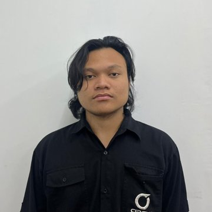

Backend Developer | Full-Stack Developer
+62 838 3417 5951 | fahmiriottss@gmail.com | Plinggisan RT.03 RW.05, Kec. Kraton, Kab. Pasuruan, Jawa Timur, Indonesia (open to remote)
lukaririnki26.github.io | github.com/lukaririnki26 | linkedin.com/in/fahmi-ramadhani-455428216
Backend and Full-Stack Developer with 5+ years of experience building ERP systems, mobile apps, and financial platforms, from Laravel and MySQL to Go microservices, PostgreSQL, and Nuxt. Experienced in REST and gRPC APIs, database performance, large data imports, CI/CD, and monitoring, as well as leading modules, drawing process flowcharts, and working directly with clients.
Backend Developer - PT Dynamic Talenta Navigator
Jul 2025 - Present
Senior Full-Stack Developer - PT Lingkar Kreasi, Jakarta
Sep 2023 - Jul 2025
Full-Stack Developer - PT Lingkar Kreasi, Jakarta
Jun 2021 - Sep 2023
Intern - VEDC Malang, Malang
Oct 2019 - Mar 2020
Backend: Go, PHP, Laravel, Python, Flask, REST API, gRPC, NATS, Kafka
Databases: PostgreSQL (partitioning, indexing, query tuning), MySQL, MongoDB, Redis, pgvector
Frontend and Mobile: Vue.js, Nuxt, TypeScript, JavaScript, PrimeVue, Bootstrap, jQuery, Flutter
DevOps: Docker, GitHub Actions, CI/CD, Caddy, Nginx, Grafana, Prometheus, Loki, Supabase, Git
Soft Skills: Communication, Teamwork, Leadership, Problem-solving, Adaptability
SMKN 1 Kota Pasuruan - Pasuruan, Jawa Timur
2018 - 2020